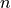

GEMCLUS API¶
The GEMINI-clustering package currently contains simple MLP and logistic regression for all-feature clustering as well as sparsity-constrained variants of these models.
Clustering models¶
Dense models¶
|
Implementation of the maximisation of the MMD-OvA GEMINI using a logistic regression as a clustering distribution . |
|
Implementation of the maximisation of the Wasserstein GEMINI using a logisti regression as a clustering distribution . |
|
Implementation of the maximisation of the classical mutual information using a logistic regression with an |
|
Implementation of the maximisation of the MMD-OvA GEMINI using a two-layer neural network as a clustering distribution . |
|
Implementation of the maximisation of the Wasserstein GEMINI using a two-layer neural network as a clustering distribution . |
 penalty on the weights.
penalty on the weights.Sparse models¶
|
This is the Sparse version of the LinearMMD clustering model. |
|
This is the Sparse Version of the MLP MMD model. |
Dataset generation¶
|
Returns  samples drawn from a mixture of Gaussian distributions. |
|
Draws samples from a Gaussian mixture with 3 isotropic components of respective means 1, 0 and 1 over 5 dimensions scaled by |
|
Draws samples from a mixture of 4 Gaussian distributions in 2d with additional variables linearly dependent of the informative variables and non-informative noisy variables. |
 .
.